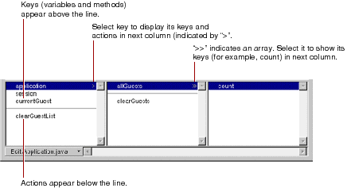
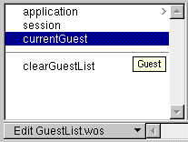
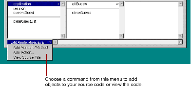

Table of Contents
Table of Contents  Next Section
Table of Contents
Next Section
Table of Contents  Previous Section
Previous Section

The first column of the object browser displays two types of objects:
In the figure, for example, the application object is selected, showing that there are keys and actions defined in the session code. One of these, allGuests, is an array (indicated by the ">>"), and the array's count method is displayed in the next column.
Note: If you rest the mouse pointer on a key, WebObjects Builder displays its type.

When you create a new project, the only keys that appear in the object browser are application and session (unless you use the Wizard to create a database application). These are methods that allow you to access variables in your application and session code.

There are several ways to add items to the object browser:
When you save changes to a source file, WebObjects Builder parses the file, detects items that have been added and deleted, and updates the object browser's display to reflect the changes. The source code can be written in any of the languages that WebObjects supports (Java, Objective-C, or WebScript).
Table of Contents Next Section